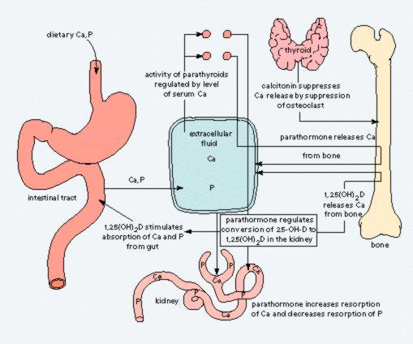

Kalsium
Tilbake til artikkelserien om næringsstoffene
Kalsium har atomnummer 20, symbolet Ca2+, og har mange viktige funksjoner i kroppen. Først og fremst som et strukturelement i bein og tenner, men mineralet har også mange viktige funksjoner inni cellene. Kalsium er et av de mest utbredte elementene i jordskorpen, etter jern, aluminium, silikon og oksygen, og 2-4% av kroppsvekten til alle landlevende dyr utgjøres av kalsium.

I kroppen finner vi kalsium først og fremst som et strukturelement i skjelettet og tennene. 99% av alt kalsium i kroppen finnes her. Resten finnes inni cellene og sirkulerende i blodet. Med alderen er det vanlig at kalsium akkumuleres rundt omkring i skadede vev. Slik kalsifisering av annet vev enn tenner og bein er som oftest et tegn på vevsskade eller celledød.
Opptak og metabolisme
Gjennom fordøyelsen frigjøres kalsium fra komplekser i maten, og fritt kalsium er tilgjengelig for opptak. Opptaket av kalsium skjer både aktivt og passivt. Det aktive opptaket skjer gjennom spesifikke transportproteiner, og kapasiteten for denne typen absorbsjon er begrenset. Fra tarmen fraktes kalsium inn i tarmcellene gjennom ulike transportproteiner, deriblant TRPV6. Inni cellene har vi et kalsiumbindende protein som heter calbindin, som transporterer kalsium gjennom cellen og videre ut i blodbanen. D-vitamin stimulerer kalsiumopptaket ved å øke uttrykket av disse proteinene, og dermed øke kapasiteten for aktiv absorbsjon. Den passive absorbsjonen skjer ved paracellulær diffusjon som styres av konsentrasjonen på begge sider av tarmcellene. Når vi får i oss mer kalsium fra kostholdet øker konsentrasjonen i tarmen, og den passive absorbsjonen blir viktigere. Kalsium fraktes fra tarmcellene og ut i blodet først og fremst ved hjelp av en energikrevende kalsiumpumpe, og sekundært via en kotransportmekanisme som frakter natrium motsatt vei.
Noe som skiller kalsium fra de fleste andre næringsstoffer er at også lagringsformen har en viktig funksjon. Over 99% av kalsiumet i kroppen inngår nemlig i beinmineralet hydroksyapatitt som er det viktigste strukturelementet i skjelettet vårt. Den resterende prosenten fordeler seg intra- og ekstracellulært, hvorav det meste befinner seg i blodet.
Blodkonsentrasjonene av kalsium er ekstremt godt regulerte, og små avvik vil raskt gjenopprettes. Dette er viktig fordi kalsium er viktig for så godt som alle prosesser i kroppen. Omtrent halvparten av kalsiumet i blodet er i fri form, mens resten er bundet til albumin, globuliner og i komplekser med fosfat, citrat eller andre anioner. Det er oppdaget en spesiell kalsiumreseptor, CaR, som registrerer blodkonsentrasjonene av kalsium. Disse reseptorene har vi i mange ulike vev, deriblant skjoldbruskkjertelen, biskjoldbruskkjertelen, i nyrene og i tarmcellene, noe som sørger for at blodkonsentrasjonene holdes mer eller indre konstante. Dersom konsentrasjonene av kalsium reduseres, vil dette sørge for at vi produserer paratyroideahormon (PTH), som vil øke kalsiumopptaket gjennom å stimulere aktivering av D-vitamin, samt øke frigjøring av kalsium fra beinvev (kalsiumlagre) og redusere utskillelsen i nyrene. Dersom blodkonsentrasjonene øker så vil produksjonen av PTH reduseres, noe som gir motsatte effekter på de nevnte mekanismene, samtidig som produksjonen av et annet hormon som heter kalsitonin øker. Dette peptidhormonet stimulerer til kalsiumlagring i beinvevet for å redusere nivåene i blodet.
For å oppsummere så vil økt kalsiuminntak stimulere til økt beindannelse og økt kalsiumutskillelse, mens lavt inntak vil føre til økt frigjøring fra bein og redusert utskillelse i urinen. Tilsammen sørger dette for at konsentrasjonene i blodet holdes konstante.
Utskillelsen av kalsium og dermed kalsiumbalansen påvirkes av andre næringsstoffer. Spesielt saltinntaket vil bidra til økt kalsiumutskillelse, ettersom utskillelse av natrium vil gjøre at vi også skiller ut mer kalsium. Dette påvirker kalsiumbalansen direkte og et høyt saltinntak kan bidra til netto tap av beinmineraler. Protein øker også utskillelsen av kalsium, men påvirker ikke den totale kalsiumbalansen ettersom også opptaket øker. Protein er regnet som positivt for beintettheten, spesielt hos eldre som fra før har et redusert kalsiumopptak. Urinutskillelsen av kalsium forklares i veldig liten grad av inntaket av kalsium i seg selv.
Funksjoner
Som nevnt i innledningen, finner vi først og fremst kalsium i kroppen som et strukturelement i beinvev, hvor det inngår i det modne beinmineralet hydroksyapatitt. Kalsium fra kostholdet er positivt for beindannelsen. Den direkte effekten er som bestanddel av hydroksyapatitt, men den har også en indirekte effekt ved at tilstrekkelig tilførsel av kalsium gir redusert utskillelse av PTH og dermed redusert nedbrytning av beinvev. Kalsium er ikke det eneste næringsstoffet som er viktig for beindannelsen, men det er ofte kalsium det først blir for lite av.
Ekstracellulært kalsium fungerer som et signalmolekyl ved å binde til CaR, som utdypet i avsnittet om metabolisme. Intracellulært fungerer kalsium som en sekundær signalbærer, og utfører sine funksjoner ved å binde til og aktivere mange forskjellige proteiner, som oftest ved å aktivere kinaser som fosforylerer proteinet. På denne måten er kalsium involvert i funksjoner som muskelkontraksjon, hormonutskillelse, nevrotransmitterutskillelse, syn, glykogenmetabolismen og celledifferensiering. Kalsium er det vanligste signalmolekylet som er kjent i biologiens verden, på grunn av molekylets egenskaper til å binde til proteiner.
Noen av proteinene som aktiveres av kalsium er:
Troponin C – sentral i kontraksjon av muskelceller.
Calmodulin – aktiverer nedbrytningen av glykogen, som gir energi til muskelkontraksjon.
Protein Kinase C – regulerer mange prosesser i kroppen, deriblant gentranskripsjon, immunrespons og cellevekst. PKC finnes i de fleste vev.
Fosfolipase A2 – Frigjør 20-karbons fettsyrer fra cellemembraner, og gir derfor utgangspunkt for eikosanoidsyntesen.
Kalsium er også viktig for overføring av signaler gjennom nerveceller. Spenningsstyrte kalsiumkanaler sørger for at kalsium fraktes inn og ut av cellene, noe som bidrar til at det kan dannes aksjonspotensialer, som bærer signalene gjennom nervetrådene.
Behov og anbefalinger
Behovet for kalsium styres av kalsiumbalansen. For å opprettholde beinmassen og alle de andre cellefunksjonene som mineralet styrer, er det viktig at inntaket minst er like stort som utskillelsen. Vi mister kalsium gjennom urin, avføring og svette. Behovet øker ved økte tap.
De norske anbefalingene ligger rundt 800mg/dag, noe høyere under maksimal vekst og for gravide/ammende. Dette tilsvarer mengden du får i deg ved å spise ca 200g sardiner, 300g brokkoli, 20g jarlsberg ost eller i 8 dL melk.
Mangeltilstander
Lavt kalsiuminntak er forbundet med en lang rekke tilstander. Den mest åpenbare er beinskjørhet, som skyldes at skjelettet kronisk tappes for kalsium for å opprettholde blodkonsentrasjonene. Lavt inntak av kalsium vil også føre til at en større andel av kalsiumet vi spiser vil absorberes i tarmen, noe som gjør at mindre uabsorbert kalsium når tykktarmen. Dette er satt i forbindelse med økt risiko for tykktarmskreft og nyrestein.
Beinskjørhet, eller osteoporose som det heter på fagspråket, kjennetegnes av redusert beinmasse, noe som øker risikoen for beinbrudd. Ettersom nesten alt kalsiumet i kroppen befinner seg nettopp i beinvevet er osteoporose den tilstanden som er best studert med tanke på lav kalsiumstatus. Beinmassen øker gjennom hele oppveksten, og i begynnelsen av 20-årene oppnår vi det som heter peak bone mass. En av hovedstrategiene for å forebygge beinskjørhet er å oppnå så høy beinmasse som mulig, og deretter minimere tapet av beinvev resten av livet. Tilstrekkelig tilførsel av kalsium er viktig i begge disse prosessene.
Metabolsk kalsiummangel, hypokalsemi (lave nivåer i blodet), skyldes nesten aldri et utilstrekkelig inntak, men heller en dysfunksjon i kalsiummetabolismen, som involverer PTH, D-vitamin, samt kalsiumbindende proteiner som kalsitonin. Lavt kalsiumnivå i blodet, vil øke mengden produksjonen av kalsitriol for å øke kalsiumopptaket, og dermed økes de sirkulerende mengdene av kalsitriol. Dette kan påvirke alle vev. Kalsitriol åpner kalsiumkanaler i enkelte celler, som glatte muskler og fettvev. Dette kan gi konsekvenser som kontraksjon av glatte muskelceller rundt blodårene, oppregulering av fettsyntesen og reduksjon av fettforbrenningen. Lavt inntak av kalsium kan derfor bidra til utviklingen av høyt blodtrykk og overvekt.
Som nevnt vil lavt kalsiuminntak medføre at mindre kalsium fraktes uabsorbert ned til tykktarmen. Dette øker risikoen for å utvikle nyrestein. Dette er fordi kalsium binder til oksalat og hindrer at dette absorberes. Jo mer oksalat som absorberes, jo større er sannsynligheten for at nyresteiner dannes (kalsiumoksalater). Det er også sett en sammenheng mellom lavt kalsiuminntak og økt risiko for tykktarmskreft, men mekanismen for hvorfor dette skjer er ikke fullstendig kartlagt. Det kan være fordi kalsium binder til frie fettsyrer/gallesyrer og derfor hindrer toksisitet av disse, eller det kan være direkte effekter på tarmcellene. I alle tilfeller så er det vist at tilskudd av kalsium reduserer forekomsten av denne krefttypen.
Kan vi få for mye?
Når det er snakk om kalsiumforgiftning, hyperkalsemi, er det snakk om forhøyet kalsiumkonsentrasjon i blodet. Dette skyldes sjeldent høyt inntak fra mat, men kan oppstå ved høyt inntak fra tilskudd. Symptomer på hyperkalsemi kan være er kvalme, forstoppelse, kvalme, økt urinmengde og forvirring. Nyrestein kan dannes, men som nevnt under mangeltilstander er dette vanligere ved lavt inntak.
Tilskudd av kalsium kan redusere risikoen for nyrestein, men bare dersom det tas til måltid. Dersom tilskuddet ikke tas til måltid vil det ikke kunne hindre opptak av oksalat, og økt urinutskillelse av kalsium vil øke risikoen for at det felles ut kalsiumoksalatsteiner.
Biotilgjenglighet og gode kilder
Biotilgjengeligheten til kalsium bestemmes av hvor lett kalsium kan frigjøres fra molekylene det er bundet til i maten vi spiser. Dette er først og fremst viktig for den aktive transporten, da kalsiumsalter også kan absorberes passivt. Hvor godt kalsium løser seg opp har tradisjonelt sett vært antatt å være en viktig faktor for biotilgjengeligheten. Derfor har man også antatt at surheten i magesekk og tarm spiller en viktig rolle. Dette er imidlertid nå satt i tvil ettersom løseligheten ser ut til å være mindre viktig enn vi trodde tidligere.
Antinæringsstoffer som oksalat (finnes i blant annet hvete, nøtter, sjokolade og soya) og fytat (finnes blant annet i belgfrukter, korn, frø og nøtter) binder til mineraler og hindrer opptak. Flesteparten av disse stoffene ødelegges ved varmebehandling. Andre kostfaktorer kan øke biotilgjengeligheten. Blant disse finner vi molekyler som binder til kalsium og dermed hindrer at kalsium binder til eksempelvis oksalat, fytat eller fosfat. Enkelte peptider i melk har denne egenskapen, noe som gjør at biotilgjengeligheten fra melk er høy (i motsetning til det mange ser ut til å tro).
Fysiologiske faktorer som påvirker kalsiumopptaket er D-vitaminstatus og hastigheten på tarmpassasjen. Fosformangel kan føre til økt utskillelse av paratyroideahormon (PTH), noe som vil øke opptaket av både fosfor og kalsium.
Hovedkildene til kalsium har endret seg mye opp gjennom menneskets evolusjon. Tidligere var hovedkilden til dette mineralet røtter, nøtter og bønner, men etter jordbruksrevolusjonen overtok plantenes frukter (kornet) en større del av menneskets matinntak. Disse delene av plantene inneholder mindre kalsium enn røttene, så inntaket sank betraktelig. Før jernalderen malte mennesket korn ved hjelp av kalkstein, noe som tilførte en del kalsium til melet.
I dag er meieriprodukter den klart største kilden til kalsium, og bidrar i gjennomsnitt med ca 80% av kalsiuminntaket for et voksent menneske. Ved et kornbasert kosthold er det svært vanskelig å dekke kalsiumbehovet uten meieriprodukter. Gode kilder til kalsium er hvitost, bønner, nøtter, grønnsaker som brokkoli og blomkål, og sardiner (fisk der du spiser beina, som består av mye kalsium).
Aktuelt om kalsium
Det er data som støtter at kalsium kan forebygge høyt blodtrykk. I tillegg til dette har det en effekt på blodlipidene, og det er derfor antatt at kalsium har en rolle i forebyggingen av hjertesykdom. En nyere metaanalyse der det ble gitt tilskudd av D-vitamin og kalsium fant imidlertid ikke noen sammenheng mellom tilskudd og hjertesykdom. Her er det viktig å ha i bakhodet at tilskudd ikke nødvendigvis vil gi samme effekter som å tilføre næringsstoffer gjennom maten, siden maten også gir mange andre stoffer samtidig som kan ha en effekt.
I DASH-studiene (Dietary Approaches to Stop Hypertension) viste det seg at de som spiste meieriprodukter jevnlig hadde en større blodtrykksreduksjon enn de som ikke gjorde det.
Kalsium og meieriprodukter ser ut til å redusere risikoen for tykktarmskreft.
Artikkelen er sist oppdatert juli 2013